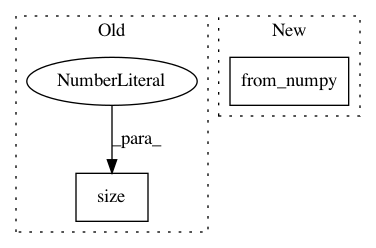

d5398270501cd5d6e9880db5e15ebf407ddec5ee,examples/plot_expectation_maximisation_manifolds.py,,weighted_gmm_pdf,#Any#Any#Any#Any#Any#,160
Before Change
def weighted_gmm_pdf(w, z, mu, sigma, distance):
// print(z.size())
// print(z.size(0), len(mu), z.size(1))
z_u = z.unsqueeze(1).expand(z.size(0), len(mu), z.size(1))
// print(z_u.size())
// print(mu.size())
mu_u = mu.unsqueeze(0).expand_as(z_u)
After Change
means_units = gs.repeat(means_units,mesh_data_units.shape[0],axis = 0)
mesh_data_units = torch.from_numpy(mesh_data_units)
means_units = torch.from_numpy(means_units)
//means_units = means_units.expand_as(mesh_data_units)
In pattern: SUPERPATTERN
Frequency: 3
Non-data size: 2
Instances
Project Name: geomstats/geomstats
Commit Name: d5398270501cd5d6e9880db5e15ebf407ddec5ee
Time: 2020-04-03
Author: hadizaatiti@gmail.com
File Name: examples/plot_expectation_maximisation_manifolds.py
Class Name:
Method Name: weighted_gmm_pdf
Project Name: lanpa/tensorboardX
Commit Name: 69abb00b1264ad97c90eab8582b98b2ced5799b9
Time: 2017-12-29
Author: huang.dexter@gmail.com
File Name: tensorboardX/embedding.py
Class Name:
Method Name: make_sprite
Project Name: rusty1s/pytorch_geometric
Commit Name: dd97be0ed3c6f249df1df338e11567ac29a27339
Time: 2019-08-11
Author: matthias.fey@tu-dortmund.de
File Name: torch_geometric/utils/geodesic.py
Class Name:
Method Name: geodesic_distance